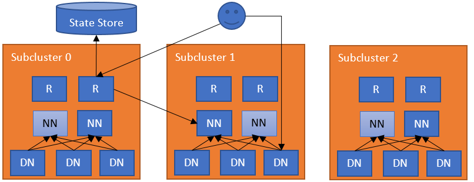

NameNodes have scalability limits because of the metadata overhead comprised of inodes (files and directories) and file blocks, the number of Datanode heartbeats, and the number of HDFS RPC client requests. The common solution is to split the filesystem into smaller subclusters HDFS Federation and provide a federated view ViewFs. The problem is how to maintain the split of the subclusters (e.g., namespace partition), which forces users to connect to multiple subclusters and manage the allocation of folders/files to them.
A natural extension to this partitioned federation is to add a layer of software responsible for federating the namespaces. This extra layer allows users to access any subcluster transparently, lets subclusters manage their own block pools independently, and will support rebalancing of data across subclusters later (see more info in HDFS-13123). The subclusters in RBF are not required to be the independent HDFS clusters, a normal federation cluster (with multiple block pools) or a mixed cluster with federation and independent cluster is also allowed. To accomplish these goals, the federation layer directs block accesses to the proper subcluster, maintains the state of the namespaces, and provides mechanisms for data rebalancing. This layer must be scalable, highly available, and fault tolerant.
This federation layer comprises multiple components. The Router component that has the same interface as a NameNode, and forwards the client requests to the correct subcluster, based on ground-truth information from a State Store. The State Store combines a remote Mount Table (in the flavor of ViewFs, but shared between clients) and utilization (load/capacity) information about the subclusters. This approach has the same architecture as YARN federation.

The simplest configuration deploys a Router on each NameNode machine. The Router monitors the local NameNode and its state and heartbeats to the State Store. When a regular DFS client contacts any of the Routers to access a file in the federated filesystem, the Router checks the Mount Table in the State Store (i.e., the local cache) to find out which subcluster contains the file. Then it checks the Membership table in the State Store (i.e., the local cache) for the NameNode responsible for the subcluster. After it has identified the correct NameNode, the Router proxies the request. The client accesses Datanodes directly.
There can be multiple Routers in the system with soft state. Each Router has two roles:
The Router receives a client request, checks the State Store for the correct subcluster, and forwards the request to the active NameNode of that subcluster. The reply from the NameNode then flows in the opposite direction. The Routers are stateless and can be behind a load balancer. For health checking, you can use /isActive endpoint as a health probe (e.g. http://ROUTER_HOSTNAME:ROUTER_PORT/isActive). For performance, the Router also caches remote mount table entries and the state of the subclusters. To make sure that changes have been propagated to all Routers, each Router heartbeats its state to the State Store.
The communications between the Routers and the State Store are cached (with timed expiration for freshness). This improves the performance of the system.
The Router periodically heartbeats its state to the State Store.
For this role, the Router periodically checks the state of a NameNode (usually on the same server) and reports their high availability (HA) state and load/space status to the State Store. Note that this is an optional role, as a Router can be independent of any subcluster. For performance with NameNode HA, the Router uses the high availability state information in the State Store to forward the request to the NameNode that is most likely to be active. Note that this service can be embedded into the NameNode itself to simplify the operation.
The Router operates with failures at multiple levels.
Federated interface HA: The Routers are stateless and metadata operations are atomic at the NameNodes. If a Router becomes unavailable, any Router can take over for it. The clients configure their DFS HA client (e.g., ConfiguredFailoverProvider or RequestHedgingProxyProvider) with all the Routers in the federation as endpoints.
Unavailable State Store: If a Router cannot contact the State Store, it will enter into a Safe Mode state which disallows it from serving requests. Clients will treat Routers in Safe Mode as it was an Standby NameNode and try another Router. There is a manual way to manage the Safe Mode for the Router.
The Safe Mode state can be managed by using the following command:
[hdfs]$ $HADOOP_HOME/bin/hdfs dfsrouteradmin -safemode enter | leave | get
NameNode heartbeat HA: For high availability and flexibility, multiple Routers can monitor the same NameNode and heartbeat the information to the State Store. This increases clients’ resiliency to stale information, should a Router fail. Conflicting NameNode information in the State Store is resolved by each Router via a quorum.
Unavailable NameNodes: If a Router cannot contact the active NameNode, then it will try the other NameNodes in the subcluster. It will first try those reported as standby and then the unavailable ones. If the Router cannot reach any NameNode, then it throws an exception.
Expired NameNodes: If a NameNode heartbeat has not been recorded in the State Store for a multiple of the heartbeat interval, the monitoring Router will record that the NameNode has expired and no Routers will attempt to access it. If an updated heartbeat is subsequently recorded for the NameNode, the monitoring Router will restore the NameNode from the expired state.
To interact with the users and the administrators, the Router exposes multiple interfaces.
RPC: The Router RPC implements the most common interfaces clients use to interact with HDFS. The current implementation has been tested using analytics workloads written in plain MapReduce, Spark, and Hive (on Tez, Spark, and MapReduce). Advanced functions like snapshot, encryption and tiered storage are left for future versions. All unimplemented functions will throw exceptions.
Admin: Administrators can query information from clusters and add/remove entries from the mount table over RPC. This interface is also exposed through the command line to get and modify information from the federation.
Web UI: The Router exposes a Web UI visualizing the state of the federation, mimicking the current NameNode UI. It displays information about the mount table, membership information about each subcluster, and the status of the Routers.
WebHDFS: The Router provides the HDFS REST interface (WebHDFS) in addition to the RPC one.
JMX: It exposes metrics through JMX mimicking the NameNode. This is used by the Web UI to get the cluster status.
Some operations are not available in Router-based federation. The Router throws exceptions for those. Examples users may encounter include the following.
Federation supports and controls global quota at mount table level. For performance reasons, the Router caches the quota usage and updates it periodically. These quota usage values will be used for quota-verification during each WRITE RPC call invoked in RouterRPCSever. See HDFS Quotas Guide for the quota detail.
Note: When global quota is enabled, setting or clearing sub-cluster’s quota directly is not recommended since Router Admin server will override sub-cluster’s quota with global quota.
The (logically centralized, but physically distributed) State Store maintains:
The backend of the State Store is pluggable. We leverage the fault tolerance of the backend implementations. The main information stored in the State Store and its implementation:
Membership: The membership information encodes the state of the NameNodes in the federation. This includes information about the subcluster, such as storage capacity and the number of nodes. The Router periodically heartbeats this information about one or more NameNodes. Given that multiple Routers can monitor a single NameNode, the heartbeat from every Router is stored. The Routers apply a quorum of the data when querying this information from the State Store. The Routers discard the entries older than a certain threshold (e.g., ten Router heartbeat periods).
Mount Table: This table hosts the mapping between folders and subclusters. It is similar to the mount table in ViewFs where it specifies the federated folder, the destination subcluster and the path in that folder.
Router supports security similar to current security model in HDFS. This feature is available for both RPC and Web based calls. It has the capability to proxy to underlying secure HDFS clusters.
Similar to Namenode, support exists for both kerberos and token based authentication for clients connecting to routers. Router internally relies on existing security related configs of core-site.xml and hdfs-site.xml to support this feature. In addition to that, routers need to be configured with its own keytab and principal.
For token based authentication, router issues delegation tokens to upstream clients without communicating with downstream namenodes. Router uses its own credentials to securely proxy to downstream namenode on behalf of upstream real user. Router principal has to be configured as a superuser in all secure downstream namenodes. Refer here to configure proxy user for namenode. Along with that, user owning router daemons should be configured with the same identity as namenode process itself. Refer here for details. Router relies on a state store to distribute tokens across all routers. Apart from default implementation provided users can plugin their own implementation of state store for token management. Default implementation relies on zookeeper for token management. Since a large router/zookeeper cluster could potentially hold millions of tokens, jute.maxbuffer system property that zookeeper clients rely on should be appropriately configured in router daemons.
See the Apache JIRA ticket HDFS-13532 for more information on this feature.
Router supports assignment of the dedicated number of RPC handlers to achieve isolation for all downstream nameservices it is configured to proxy. Since large or busy clusters may have relatively higher RPC traffic to the namenode compared to other clusters namenodes, this feature if enabled allows admins to configure higher number of RPC handlers for busy clusters. If dedicated handlers are not assigned for specific nameservices, equal distribution of RPC handlers is done for all configured nameservices. Note Fanout calls are treated as targeting a special nameservice, thus can be configured with handlers as well.
If a downstream namenode is slow/busy enough that permits are unavailable, routers would throw StandByException exception to the client. This would in turn trigger a failover behavior at the client side and clients would connect to a different router in the cluster. This offers a positive effect of automatically load balancing RPCs across all routers nodes. This is important to ensure that a single router does not become a bottleneck in case of unhealthy namenodes and all handlers available in the entire router cluster are utilized.
Users can configure handlers based on steady state load that individual downstream namenodes expect and can introduce more routers to the cluster to handle more RPCs overall. Because of the bouncing behavior that clients automatically get in this feature in an event where certain namenodes are overloaded, good clients connecting to good namenodes will always continue to use Rpc lanes dedicated to them. For bad behaving namenodes or backfill jobs that put spiky loads on namenodes, more routers could potentially be added with a higher than usual handler count to deal with the surge in traffic for specific nameservices if needed.
Overall the isolation feature is exposed via a configuration dfs.federation.router.handler.isolation.enable. The default value of this feature will be “false”. Users can also introduce their own fairness policy controller for custom allocation of handlers to various nameservices.
See the Apache JIRA ticket HDFS-14090 for more information on this feature.
By default, the Router is ready to take requests and monitor the NameNode in the local machine. It needs to know the State Store endpoint by setting dfs.federation.router.store.driver.class. The rest of the options are documented in hdfs-rbf-default.xml.
Once the Router is configured, it can be started:
[hdfs]$ $HADOOP_PREFIX/bin/hdfs --daemon start dfsrouter
And to stop it:
[hdfs]$ $HADOOP_PREFIX/bin/hdfs --daemon stop dfsrouter
The mount table entries are pretty much the same as in ViewFs. Please make sure the downstream namespace path exists before creating mount table entry pointing to it. A good practice for simplifying the management is to name the federated namespace with the same names as the destination namespaces. For example, if we to mount /data/app1 in the federated namespace, it is recommended to have that same name as in the destination namespace.
The federation admin tool supports managing the mount table. For example, to create three mount points and list them:
[hdfs]$ $HADOOP_HOME/bin/hdfs dfsrouteradmin -add /tmp ns1 /tmp [hdfs]$ $HADOOP_HOME/bin/hdfs dfsrouteradmin -add /data/app1 ns2 /data/app1 [hdfs]$ $HADOOP_HOME/bin/hdfs dfsrouteradmin -add /data/app2 ns3 /data/app2 [hdfs]$ $HADOOP_HOME/bin/hdfs dfsrouteradmin -ls
It also supports mount points that disallow writes:
[hdfs]$ $HADOOP_HOME/bin/hdfs dfsrouteradmin -add /readonly ns1 / -readonly
If a mount point is not set, the Router will map it to the default namespace dfs.federation.router.default.nameserviceId.
Mount table have UNIX-like permissions, which restrict which users and groups have access to the mount point. Write permissions allow users to add , update or remove mount point. Read permissions allow users to list mount point. Execute permissions are unused.
Mount table permission can be set by following command:
[hdfs]$ $HADOOP_HOME/bin/hdfs dfsrouteradmin -add /tmp ns1 /tmp -owner root -group supergroup -mode 0755
The option mode is UNIX-style permissions for the mount table. Permissions are specified in octal, e.g. 0755. By default, this is set to 0755.
Router-based federation supports global quota at mount table level. Mount table entries may spread multiple subclusters and the global quota will be accounted across these subclusters.
The federation admin tool supports setting quotas for specified mount table entries:
[hdfs]$ $HADOOP_HOME/bin/hdfs dfsrouteradmin -setQuota /path -nsQuota 100 -ssQuota 1024
The above command means that we allow the path to have a maximum of 100 file/directories and use at most 1024 bytes storage space. The parameter for ssQuota supports multiple size-unit suffix (e.g. 1k is 1KB, 5m is 5MB). If no suffix is specified then bytes is assumed.
Set storage type quota for specified mount table entry:
[hdfs]$ $HADOOP_HOME/bin/hdfs dfsrouteradmin -setStorageTypeQuota <path> -storageType <storage type>
Remove quota for specified mount table entry:
[hdfs]$ $HADOOP_HOME/bin/hdfs dfsrouteradmin -clrQuota <path>
Remove storage type quota for specified mount table entry:
[hdfs]$ $HADOOP_HOME/bin/hdfs dfsrouteradmin -clrStorageTypeQuota <path>
Ls command will show below information for each mount table entry:
Source Destinations Owner Group Mode Quota/Usage /path ns0->/path root supergroup rwxr-xr-x [NsQuota: 50/0, SsQuota: 100 B/0 B]
Mount table cache is refreshed periodically but it can also be refreshed by executing refresh command:
[hdfs]$ $HADOOP_HOME/bin/hdfs dfsrouteradmin -refresh
The above command will refresh cache of the connected router. This command is redundant when mount table refresh service is enabled as the service will always keep the cache updated.
A mount point also supports mapping multiple subclusters. For example, to create a mount point that stores files in subclusters ns1 and ns2.
[hdfs]$ $HADOOP_HOME/bin/hdfs dfsrouteradmin -add /data ns1,ns2 /data -order SPACE
When listing /data, it will show all the folders and files in both subclusters. For deciding where to create a new file/folder it uses the order parameter, it currently supports the following methods:
For the hash-based approaches, the difference is that HASH would make all the files/folders within a folder belong to the same subcluster while HASH_ALL will spread all files under a mount point. For example, assuming we have a HASH mount point for /data/hash, files and folders under /data/hash/folder0 will all be in the same subcluster. On the other hand, a HASH_ALL mount point for /data/hash_all, will spread files under /data/hash_all/folder0 across all the subclusters for that mount point (subfolders will be created to all subclusters).
RANDOM can be used for reading and writing data from/into different subclusters. The common use for this approach is to have the same data in multiple subclusters and balance the reads across subclusters. For example, if thousands of containers need to read the same data (e.g., a library), one can use RANDOM to read the data from any of the subclusters.
LEADER_FOLLOWER can be used in cross-cluster disaster tolerance, it’s not for sharing overloads among sub-clusters. When using this mode like -add /data ns2,ns1 /data -order LEADER_FOLLOWER, ns2 is considered an active subcluster and ns1 is considered a follower subcluster. The order of namespaces is always leader,follower,follower....
To determine which subcluster contains a file:
[hdfs]$ $HADOOP_HOME/bin/hdfs dfsrouteradmin -getDestination /user/user1/file.txt
Note that consistency of the data across subclusters is not guaranteed by the Router. By default, if one subcluster is unavailable, writes may fail if they target that subcluster. To allow writing in another subcluster, one can make the mount point fault tolerant:
[hdfs]$ $HADOOP_HOME/bin/hdfs dfsrouteradmin -add /data ns1,ns2 /data -order HASH_ALL -faulttolerant
Note that this can lead to a file to be written in multiple subclusters or a folder missing in one. One needs to be aware of the possibility of these inconsistencies and target this faulttolerant approach to resilient paths. An example for this is the /app-logs folder which will mostly write once into a subfolder.
To prevent accessing a nameservice (sublcuster), it can be disabled from the federation. For example, one can disable ns1, list it and enable it again:
[hdfs]$ $HADOOP_HOME/bin/hdfs dfsrouteradmin -nameservice disable ns1 [hdfs]$ $HADOOP_HOME/bin/hdfs dfsrouteradmin -getDisabledNameservices [hdfs]$ $HADOOP_HOME/bin/hdfs dfsrouteradmin -nameservice enable ns1
This is useful when decommissioning subclusters or when one subcluster is missbehaving (e.g., low performance or unavailability).
To trigger a runtime-refresh of the resource specified by <key> on <host:ipc_port>. For example, to enable white list checking, we just need to send a refresh command other than restart the router server.
[hdfs]$ $HADOOP_HOME/bin/hdfs dfsrouteradmin -refreshRouterArgs <host:ipc_port> <key> [arg1..argn]
To diagnose the current state of the routers, you can use the dumpState command. It generates a text dump of the records in the State Store. Since it uses the configuration to find and read the state store, it is often easiest to use the machine where the routers run. The command runs locally, so the routers do not have to be up to use this command.
[hdfs]$ $HADOOP_HOME/bin/hdfs dfsrouteradmin -dumpState
For clients to use the federated namespace, they need to create a new one that points to the routers. For example, a cluster with 4 namespaces ns0, ns1, ns2, ns3, can add a new one to hdfs-site.xml called ns-fed which points to two of the routers:
<configuration>
<property>
<name>dfs.nameservices</name>
<value>ns0,ns1,ns2,ns3,ns-fed</value>
</property>
<property>
<name>dfs.ha.namenodes.ns-fed</name>
<value>r1,r2</value>
</property>
<property>
<name>dfs.namenode.rpc-address.ns-fed.r1</name>
<value>router1:rpc-port</value>
</property>
<property>
<name>dfs.namenode.rpc-address.ns-fed.r2</name>
<value>router2:rpc-port</value>
</property>
<property>
<name>dfs.client.failover.proxy.provider.ns-fed</name>
<value>org.apache.hadoop.hdfs.server.namenode.ha.ConfiguredFailoverProxyProvider</value>
</property>
<property>
<name>dfs.client.failover.random.order</name>
<value>true</value>
</property>
</configuration>
The dfs.client.failover.random.order set to true allows distributing the load evenly across the routers.
With this setting a user can interact with ns-fed as a regular namespace:
$ $HADOOP_HOME/bin/hdfs dfs -ls hdfs://ns-fed/ /tmp /data
This federated namespace can also be set as the default one at core-site.xml using fs.defaultFS.
In order for the system to support data-locality, you must configure your NameNodes so that they will trust the routers to supply the user’s client IP address. dfs.namenode.ip-proxy-users defines a comma separated list of users that are allowed to provide the client ip address via the caller context.
<configuration>
<property>
<name>dfs.namenode.ip-proxy-users</name>
<value>hdfs</value>
</property>
</configuration>
One can add the configurations for Router-based federation to hdfs-rbf-site.xml. The main options are documented in hdfs-rbf-default.xml. The configuration values are described in this section.
The RPC server to receive connections from the clients.
| Property | Default | Description |
|---|---|---|
| dfs.federation.router.default.nameserviceId | Nameservice identifier of the default subcluster to monitor. | |
| dfs.federation.router.rpc.enable | true |
If true, the RPC service to handle client requests in the router is enabled. |
| dfs.federation.router.rpc-address | 0.0.0.0:8888 | RPC address that handles all clients requests. |
| dfs.federation.router.rpc-bind-host | 0.0.0.0 | The actual address the RPC server will bind to. |
| dfs.federation.router.handler.count | 10 | The number of server threads for the router to handle RPC requests from clients. |
| dfs.federation.router.handler.queue.size | 100 | The size of the queue for the number of handlers to handle RPC client requests. |
| dfs.federation.router.reader.count | 1 | The number of readers for the router to handle RPC client requests. |
| dfs.federation.router.reader.queue.size | 100 | The size of the queue for the number of readers for the router to handle RPC client requests. |
The Router forwards the client requests to the NameNodes. It uses a pool of connections to reduce the latency of creating them.
| Property | Default | Description |
|---|---|---|
| dfs.federation.router.connection.pool-size | 1 | Size of the pool of connections from the router to namenodes. |
| dfs.federation.router.connection.clean.ms | 10000 | Time interval, in milliseconds, to check if the connection pool should remove unused connections. |
| dfs.federation.router.connection.pool.clean.ms | 60000 | Time interval, in milliseconds, to check if the connection manager should remove unused connection pools. |
| dfs.federation.router.enable.multiple.socket | false | If true, ConnectionPool will use a new socket when creating a new connection for the same user. And it’s best used with dfs.federation.router.max.concurrency.per.connection together. |
| dfs.federation.router.max.concurrency.per.connection | 1 | The maximum number of requests that a connection can handle concurrently. |
The administration server to manage the Mount Table.
| Property | Default | Description |
|---|---|---|
| dfs.federation.router.admin.enable | true |
If true, the RPC admin service to handle client requests in the router is enabled. |
| dfs.federation.router.admin-address | 0.0.0.0:8111 | RPC address that handles the admin requests. |
| dfs.federation.router.admin-bind-host | 0.0.0.0 | The actual address the RPC admin server will bind to. |
| dfs.federation.router.admin.handler.count | 1 | The number of server threads for the router to handle RPC requests from admin. |
The HTTP Server to provide Web UI and the HDFS REST interface (WebHDFS) for the clients. The default URL is “http://router_host:50071”.
| Property | Default | Description |
|---|---|---|
| dfs.federation.router.http.enable | true |
If true, the HTTP service to handle client requests in the router is enabled. |
| dfs.federation.router.http-address | 0.0.0.0:50071 | HTTP address that handles the web requests to the Router. |
| dfs.federation.router.http-bind-host | 0.0.0.0 | The actual address the HTTP server will bind to. |
| dfs.federation.router.https-address | 0.0.0.0:50072 | HTTPS address that handles the web requests to the Router. |
| dfs.federation.router.https-bind-host | 0.0.0.0 | The actual address the HTTPS server will bind to. |
The connection to the State Store and the internal caching at the Router.
| Property | Default | Description |
|---|---|---|
| dfs.federation.router.store.enable | true |
If true, the Router connects to the State Store. |
| dfs.federation.router.store.serializer | org.apache.hadoop.hdfs.server.federation.store.driver.impl.StateStoreSerializerPBImpl |
Class to serialize State Store records. |
| dfs.federation.router.store.driver.class | org.apache.hadoop.hdfs.server.federation.store.driver.impl.StateStoreZooKeeperImpl |
Class to implement the State Store. |
| dfs.federation.router.store.connection.test | 60000 | How often to check for the connection to the State Store in milliseconds. |
| dfs.federation.router.cache.ttl | 60000 | How often to refresh the State Store caches in milliseconds. |
| dfs.federation.router.store.membership.expiration | 300000 | Expiration time in milliseconds for a membership record. |
| dfs.federation.router.store.driver.async.override.max.threads | Number of threads to overwrite and delete records asynchronously when overriding. | |
| dfs.federation.router.mount-table.cache.update | false | If true, Mount table cache is updated whenever a mount table entry is added, modified or removed for all the routers. |
| dfs.federation.router.mount-table.cache.update.timeout | 1m | Max time to wait for all the routers to finish their mount table cache update. |
| dfs.federation.router.mount-table.cache.update.client.max.time | 5m | Max time a RouterClient connection can be cached. |
Forwarding client requests to the right subcluster.
| Property | Default | Description |
|---|---|---|
| dfs.federation.router.file.resolver.client.class | org.apache.hadoop.hdfs.server.federation.resolver.MountTableResolver |
Class to resolve files to subclusters. To enable multiple subclusters for a mount point, set to org.apache.hadoop.hdfs.server.federation.resolver.MultipleDestinationMountTableResolver. |
| dfs.federation.router.namenode.resolver.client.class | org.apache.hadoop.hdfs.server.federation.resolver.MembershipNamenodeResolver |
Class to resolve the namenode for a subcluster. |
Monitor the namenodes in the subclusters for forwarding the client requests.
| Property | Default | Description |
|---|---|---|
| dfs.federation.router.heartbeat.enable | true |
If true, the Router periodically heartbeats its state to the State Store. |
| dfs.federation.router.namenode.heartbeat.enable | If true, the Router gets namenode heartbeats and send to the State Store. If not explicitly specified takes the same value as for dfs.federation.router.heartbeat.enable. | |
| dfs.federation.router.heartbeat.interval | 5000 | How often the Router should heartbeat into the State Store in milliseconds. |
| dfs.federation.router.monitor.namenode | The identifier of the namenodes to monitor and heartbeat. | |
| dfs.federation.router.monitor.localnamenode.enable | true |
If true, the Router should monitor the namenode in the local machine. |
Note: The config dfs.nameservice.id is recommended to configure if dfs.federation.router.monitor.localnamenode.enable is enabled. This will allow the Router finding the local node directly. Otherwise, it will find the nameservice Id by matching namenode RPC address with the local node address. If multiple addresses are matched, the Router will fail to start. In addition, if the local node is in a HA mode, it is recommend to configure dfs.ha.namenode.id.
Global quota supported in federation.
| Property | Default | Description |
|---|---|---|
| dfs.federation.router.quota.enable | false |
If true, the quota system enabled in the Router. In that case, setting or clearing sub-cluster’s quota directly is not recommended since Router Admin server will override sub-cluster’s quota with global quota. |
| dfs.federation.router.quota-cache.update.interval | 60s | How often the Router updates quota cache. This setting supports multiple time unit suffixes. If no suffix is specified then milliseconds is assumed. |
Kerberos and Delegation token supported in federation.
| Property | Default | Description |
|---|---|---|
| dfs.federation.router.keytab.file | The keytab file used by router to login as its service principal. The principal name is configured with ‘dfs.federation.router.kerberos.principal’. | |
| dfs.federation.router.kerberos.principal | The Router service principal. This is typically set to router/_HOST@REALM.TLD. Each Router will substitute _HOST with its own fully qualified hostname at startup. The _HOST placeholder allows using the same configuration setting on all Routers in an HA setup. | |
| dfs.federation.router.kerberos.principal.hostname | The hostname for the Router containing this configuration file. Will be different for each machine. Defaults to current hostname. | |
| dfs.federation.router.kerberos.internal.spnego.principal | ${dfs.web.authentication.kerberos.principal} |
The server principal used by the Router for web UI SPNEGO authentication when Kerberos security is enabled. This is typically set to HTTP/_HOST@REALM.TLD The SPNEGO server principal begins with the prefix HTTP/ by convention. If the value is ‘*’, the web server will attempt to login with every principal specified in the keytab file ‘dfs.web.authentication.kerberos.keytab’. |
| dfs.federation.router.secret.manager.class | org.apache.hadoop.hdfs.server.federation.router.security.token.ZKDelegationTokenSecretManagerImpl |
Class to implement state store to delegation tokens. Default implementation uses zookeeper as the backend to store delegation tokens. |
Isolation and dedicated assignment of RPC handlers across all configured downstream nameservices. The sum of these numbers must be strictly smaller than the total number of router handlers (configed by dfs.federation.router.handler.count).
| Property | Default | Description |
|---|---|---|
| dfs.federation.router.fairness.policy.controller.class | org.apache.hadoop.hdfs.server.federation.fairness.NoRouterRpcFairnessPolicyController |
Default handler allocation model to be used if isolation feature is enabled. Recommend to use org.apache.hadoop.hdfs.server.federation.fairness.StaticRouterRpcFairnessPolicyController to fully use the feature. |
| dfs.federation.router.fairness.handler.count.EXAMPLENAMESERVICE | Dedicated handler assigned to a specific nameservice. If none is specified equal allocation is done across all nameservices. | |
| dfs.federation.router.fairness.handler.count.concurrent | Dedicated handler assigned to fan out calls such as renewLease. |
The Router and State Store statistics are exposed in metrics/JMX. These info will be very useful for monitoring. More metrics info can see RBF Metrics, Router RPC Metrics and State Store Metrics.
Enable Router to rename across namespaces. Currently it is implemented based on HDFS Federation Balance and has some limits comparing with normal rename. 1. It is much slower than the normal rename so need a longer RPC timeout configuration. See ipc.client.rpc-timeout.ms and its description for more information about RPC timeout. 2. It doesn’t support snapshot path. 3. It doesn’t support to rename path with multiple destinations.
| Property | Default | Description |
|---|---|---|
| dfs.federation.router.federation.rename.option | NONE | Specify the action when rename across namespaces. The option can be NONE(reject rename across namespaces) and DISTCP(rename across namespaces with distcp). |
| dfs.federation.router.federation.rename.force.close.open.file | true | Force close all open files when there is no diff in the DIFF_DISTCP stage. |
| dfs.federation.router.federation.rename.map | Max number of concurrent maps to use for copy. | |
| dfs.federation.router.federation.rename.bandwidth | Specify bandwidth per map in MB. | |
| dfs.federation.router.federation.rename.delay | 1000 | Specify the delayed duration(millie seconds) when the job needs to retry. |
| dfs.federation.router.federation.rename.diff | 0 | Specify the threshold of the diff entries that used in incremental copy stage. |
| dfs.federation.router.federation.rename.trash | trash | This options has 3 values: trash (move the source path to trash), delete (delete the source path directly) and skip (skip both trash and deletion). |